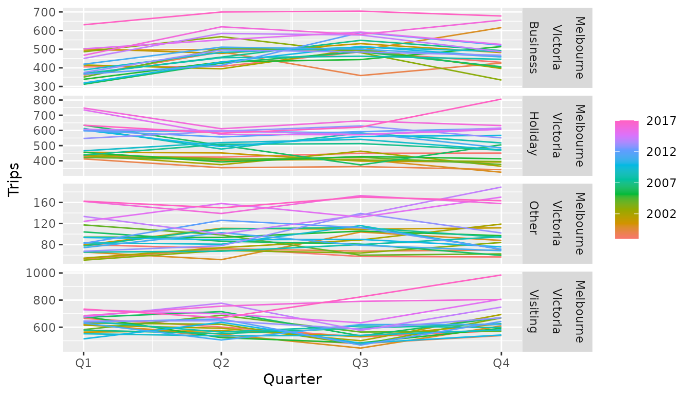

The feasts package provides a smorgasbord of tools for analysing tidy temporal data in the tsibble format. The package name is an acronym of its primary functionality: Feature Extraction and Statistics for Time Series.
Suppose we wanted to analyse seasonal patterns in the number of domestic travellers to Melbourne, Australia. In the tsibble::tourism data set, this can be further broken down into 4 reasons of travel: “business”, “holiday”, “visiting friends and relatives” and “other reasons”. The first observation from each series are shown below.
tourism_melb <- tourism %>%
filter(Region == "Melbourne")
tourism_melb %>%
group_by(Purpose) %>%
slice(1)
#> # A tsibble: 4 x 5 [1Q]
#> # Key: Region, State, Purpose [4]
#> # Groups: Purpose [4]
#> Quarter Region State Purpose Trips
#> <qtr> <chr> <chr> <chr> <dbl>
#> 1 1998 Q1 Melbourne Victoria Business 405.
#> 2 1998 Q1 Melbourne Victoria Holiday 428.
#> 3 1998 Q1 Melbourne Victoria Other 79.9
#> 4 1998 Q1 Melbourne Victoria Visiting 666.A useful first look at a time series is with a standard time series plot.
tourism_melb %>%
autoplot(Trips)This plot reveals that each of the reasons for visiting Melbourne follow a similar pattern, and that in recent years the amount of tourism is increasing. It is also clear that most people travel to Melbourne for one of three reasons (Business, Holiday or Visiting), and fewer travellers report other travel purposes.
While this plot reveals many useful large scale features of the data, it can be difficult to identify specifics about the seasonal pattern (other than its existence). Which quarter has the most tourism travel in Melbourne? To find out we will need to investigate other plot types.
tourism_melb %>%
gg_season(Trips)
The seasonal plot (gg_season()) wraps a seasonal period (in this case, years) over the x axis, allowing you to see how each quarter varies. In particular, it is apparent that Q3 is a low point for people visiting friends and relatives, which noticeably increases in Q4. Similarly Q2 and Q3 are the time periods with the most business travel.
The trend of recent years can also be seen in the spread between the lines. The more recent years (purple/pink) are higher than the previous years. This also reveals that the drop in visiting tourism in Q3 was far less extreme in the most recent two years.
tourism_melb %>%
gg_subseries(Trips)An alternative visualisation of seasonal patterns is the subseries plot (gg_subseries()), which isolates seasonal periods into separate plots. The blue lines indicate the average number of trips in each quarter, making the increase in visiting tourism from Q3 to Q4 more obvious. This plot style is especially useful in seeing how seasonality changes over time. Focusing on the visiting tourism (last row of facets), the number of tourists in Q3 and Q4 are increasing much more than in Q1 and Q2 (suggesting that the trend may vary between seasons).
A look at the correlations in each series could reveal structures which are difficult to identify in the above plots.
tourism_melb %>%
ACF(Trips)
#> # A tsibble: 76 x 5 [1Q]
#> # Key: Region, State, Purpose [4]
#> Region State Purpose lag acf
#> <chr> <chr> <chr> <lag> <dbl>
#> 1 Melbourne Victoria Business 1Q 0.487
#> 2 Melbourne Victoria Business 2Q 0.193
#> 3 Melbourne Victoria Business 3Q 0.331
#> 4 Melbourne Victoria Business 4Q 0.470
#> 5 Melbourne Victoria Business 5Q 0.219
#> 6 Melbourne Victoria Business 6Q 0.0750
#> 7 Melbourne Victoria Business 7Q 0.168
#> 8 Melbourne Victoria Business 8Q 0.321
#> 9 Melbourne Victoria Business 9Q 0.166
#> 10 Melbourne Victoria Business 10Q -0.0183
#> # … with 66 more rowsThe above code computes autocorrelations (ACF()), however it is also possible to compute partial autocorrelations (PACF()) and cross-correlations (CCF()).
The tables given from these correlation functions also have a nice autoplot() method, which will show the correlations along with a threshold for significance (controllable with the level argument).
Another helpful strategy in investigating the patterns in a time series is to decompose it into components of interest. A useful decomposition for this is the STL decomposition, which allows you to extract multiple seasonal patterns with any seasonal period.
tourism_melb %>%
model(STL(Trips ~ season(window = "periodic"))) %>%
components()
#> # A dable: 320 x 10 [1Q]
#> # Key: Region, State, Purpose, .model [4]
#> # STL Decomposition: Trips = trend + season_year + remainder
#> Region State Purpose .model Quarter Trips trend season_year remainder
#> <chr> <chr> <chr> <chr> <qtr> <dbl> <dbl> <dbl> <dbl>
#> 1 Melbo… Vict… Busine… "STL(… 1998 Q1 405. 437. -58.0 25.8
#> 2 Melbo… Vict… Busine… "STL(… 1998 Q2 408. 434. 18.1 -44.1
#> 3 Melbo… Vict… Busine… "STL(… 1998 Q3 486. 430. 37.9 18.3
#> 4 Melbo… Vict… Busine… "STL(… 1998 Q4 429. 431. 1.99 -3.48
#> 5 Melbo… Vict… Busine… "STL(… 1999 Q1 361. 427. -58.0 -7.82
#> 6 Melbo… Vict… Busine… "STL(… 1999 Q2 486. 409. 18.1 58.6
#> 7 Melbo… Vict… Busine… "STL(… 1999 Q3 359. 418. 37.9 -97.0
#> 8 Melbo… Vict… Busine… "STL(… 1999 Q4 426. 440. 1.99 -16.7
#> 9 Melbo… Vict… Busine… "STL(… 2000 Q1 495. 468. -58.0 84.1
#> 10 Melbo… Vict… Busine… "STL(… 2000 Q2 499. 501. 18.1 -19.8
#> # … with 310 more rows, and 1 more variable: season_adjust <dbl>The above call to STL() has decomposed the Trips variable into three components such that Trips = trend + season_year + remainder. By setting season(window = "periodic"), we have set the seasonal pattern to be unchanging — you can control how quickly the seasonal pattern can change by setting this to some number (smaller numbers correspond to more rapid change).

Much like the table from ACF(), decompositions can also be plotted with autoplot(). This gives the expected faceted plot of the components extracted from the measured variable. The plot shows that each purpose of travel has a different seasonal pattern, and that the strength and structure of this pattern has changed over time. As these components are often on different scales, this plot includes a set of scale bars which are of equal scaled size across all plots.
The above plots and analysis are useful for if you’re looking at a few series, but what can be done if you needed to look at and compare more time series? Extracting features from a collection of time series is a scalable approach to analysing many data sets. Each feature is a numerical summary of the data set’s defining characteristics, and a set of features can be created using feature_set().
tourism_melb_features <- tourism_melb %>%
features(Trips, feature_set(tags = "stl"))
tourism_melb_features
#> # A tibble: 4 x 12
#> Region State Purpose trend_strength seasonal_streng… seasonal_peak_y…
#> <chr> <chr> <chr> <dbl> <dbl> <dbl>
#> 1 Melbo… Vict… Busine… 0.776 0.541 3
#> 2 Melbo… Vict… Holiday 0.860 0.283 1
#> 3 Melbo… Vict… Other 0.819 0.132 3
#> 4 Melbo… Vict… Visiti… 0.751 0.448 0
#> # … with 6 more variables: seasonal_trough_year <dbl>, spikiness <dbl>,
#> # linearity <dbl>, curvature <dbl>, stl_e_acf1 <dbl>, stl_e_acf10 <dbl>In the example above, the components from the STL decomposition has been used to summarise the strength of trend and seasonality components of each series.
These features are particularly useful to show on a plot.
library(ggplot2)
tourism_melb_features %>%
ggplot(aes(x = trend_strength, y = seasonal_strength_year, colour = Purpose)) +
geom_point() +
coord_equal() +
lims(x = c(0,1), y = c(0,1))
When analysing just four series, a plot of the features does not look very exciting. It is worth noting that a lot of the individuality seen in the previous analysis have been lost when each series is summarised down to just two values. However recall that the analysis has been working from a very small subset of the complete tourism data set. Let’s see how Melbourne compares with the other regions in the data.
tourism_features <- tourism %>%
features(Trips, feat_stl)
ggplot(mapping = aes(x = trend_strength, y = seasonal_strength_year, colour = Purpose)) +
geom_point(data = tourism_features, alpha = 0.3) +
geom_point(data = tourism_melb_features, size = 2) +
coord_equal() +
facet_wrap(vars(Purpose)) +
lims(x = c(0,1), y = c(0,1))Looks like Melbourne is one of the trendiest places around Australia!
More information about time series analysis using the feasts package can be found in Forecasting: Principles and Practices (3rd Ed.) and in the pkgdown site.